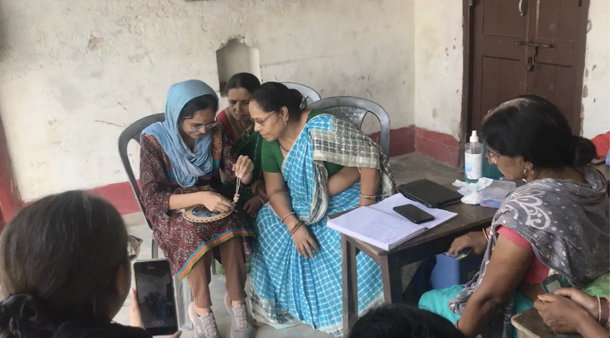
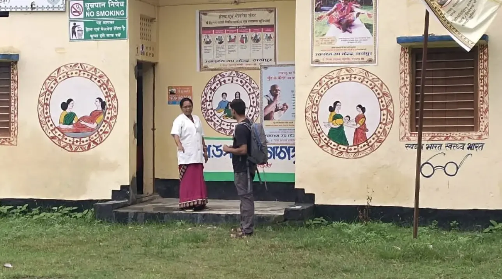

class: middle left # thesis-thoughts: .footnote.grey[by arjun;<br>for feedback-collective;<br>may, 2026.] --- class: middle left <figure> <img src = "../assets/media/260505_thesis-thoughts/2605_mind-map.webp"> <figcaption>mind-map from my room, since december-2025.</figcaption> </figure> --- class: top left background-image: url("../assets/media/260505_thesis-thoughts/2605_mind-map.webp") --- class: middle left ## self-assembling robots -- ## a system to make modular electronics -- ## typographic poems (say what hasn't been said before) -- ## running around instrument with varying frequencies -- ## a way to wear what you feel -- ## wikipedia transcription to dna -- ## ... --- --- class: middle <figure> <img src = "https://external-content.duckduckgo.com/iu/?u=https%3A%2F%2Fdrop.ndtv.com%2Fvideo%2Fimages%2Fvod%2Fmedium%2F2026-04%2F1091402_maxresdefault.jpg%3Fdownsize%3D600%3A315&f=1&nofb=1&ipt=03186339394114da9141202ff7e128d10bc8e74df7cdf166ac82e87091e2843c"> <figcaption>h1-b freeze news; ndtv, april 2026.</figcaption> </figure> --- class: middle left ## .grey[self-assembling robots] -> tangible-media, mit. ## .grey[a system to make modular electronics] -> tangible-media, mit. ## .grey[typographic poems (say what hasn't been said before)] -> establishing artistically ## .grey[running around instrument with varying frequencies] -> tangible-media, mit ## .grey[a way to wear what you feel] -> mit ## .grey[wikipedia transcription to dna] -> mit / phd. --- class: middle <figure> <video preload="yes" muted playsinline autoplay nocontrols loop> <source src="../assets/media/260505_thesis-thoughts/Screen Recording 2026-05-05 at 11.11.09.mp4" type="video/mp4" /> your browser does not support videos. </video> <figcaption>itp-winter-show projects; 2025.</figcaption> </figure> --- class: middle left ## we make one-offs — tools & pieces that live once (or a few times) in shows & exhibitions. -- # even when we make tools, rarely other humans live by them. --- class: left middle <figure> <div class = "two"> <p></p> <p></p> </div> <figcaption>images from tinkerlabs, mumbai; 2025.</figcaption> </figure> ---